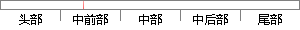

对于初学者来说，Windows Hello 是一个智能身份认证系统。
片段位置图

相似结果|
相似片段 1：的Windows系统提供的认证方法●标准的Windows系统提供的认证方法●存有用户m及其密码的简单数据库●直接连接一个组织的身份管理系统来实现认证●支持同时使用两种或者更多的认证方法来访问合作伙伴的应用程序或系统●参与联合的识别管理系统同时智能小区电子商务系统应该允许匿名用户访问站点但需加以限制。
|
※ 片段修改建议 ※
近似词参考：- 对于：对 对付
- 来说：来讲
- 系统：体系
系统自动生成语句：对初学者来讲，Windows Hello 是一个智能身份认证体系。
注：本片段修改建议为系统自动生成，仅供参考。